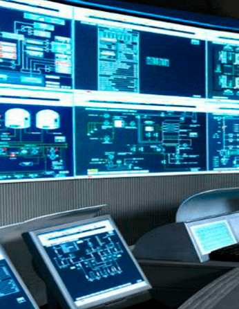
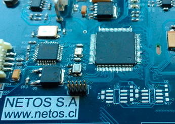

Instrumentación, automatización y monitoreo de procesos
build
Diseño e implementación de sistemas de monitoreo, automatización y control
whatshot
Estimación del nivel de carga total JC
track_changes
Diseño e implementación de plataformas informáticas asociadas al monitoreo y control de procesos
Sistemas web
Registro histórico de datos
Visualización en linea de datos
done
Trabajos personalizados en instalaciones del cliente
Levantamiento y documentación
Mantenimiento de sistemas
description
Estudios y análisis específicos del estado de sistemas de automatización y monitoreo

Diseño y desarrollo tecnológico según requerimientos específicos
lightbulb_outline
Instrumentación innovadora según los requerimientos del proceso específico.
settings_input_composite
Equipos electrónicos de control según el proceso.
dashboard
Plataformas informáticas de gestión de datos de procesos.
settings
Diseño e implementación de equipos de comunicación industrial según requerimientos del cliente.
